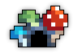
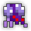
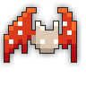
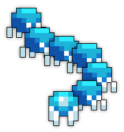
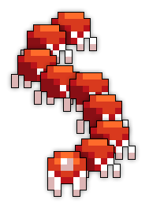

| Last updated: Exalt Version 5.13.0.0 (June 2025) |
|---|
 Teleportation Disabled Teleportation Disabled
|
| Dust Drops | ||
|---|---|---|
| 32-38 |
28-34 |
22-28 |
The Fungal Cavern is an extremely dangerous dungeon that is the first part of the Abandoned Mineshaft, with the Crystal Cavern being the second part. This dungeon is one of the Exaltation dungeons, boosting Wisdom.
The dungeon is a source of many untiered items along with Potions of Life, Greater Stat Potions, T13 alternate weapons and armor, and the entire Crystal Kunoichi ST Set.
Portal to the Fungal Cavern drops at guaranteed rate from the Ancient Kaiju, Crystal Worm Father, Sentient Monolith and Adult Baneserpent.
The portal is a guaranteed drop from the Crystal Worm Father, which spawns at the end of the event triggered by the Dwarf Miner.
This dungeon must be completed to earn ‘Conqueror of the Realm‘, ‘Hero of the Nexus’ and ‘Realm of the Mad God’ fame bonuses.
| The Realm Eye says: |
|---|

Steamhammer’s Mining Co. began an ambitious operation to dig deeper beneath the realm than any humanoid had ever gone. Surpassing even the depth of other subterranean manmade feats like the Toxic Sewers and Lost Halls, this enormous mineshaft extended nearly to Shaitan’s personal domain. But Steamhammer’s gang pushed their luck and encountered an unexpected threat dwelling far beyond normal reach. At first, the miners were able to make some amount of peace with the puzzling mushroom tribes. The dwarves were allowed to continue undisturbed and even engaged in some trade. After a few weeks, the dwarves uncovered a chamber packed with more valuable ore than the entire realm had ever known to possess. Eager to begin the haul, the dwarves started to chip away at the abundant crystals. But with a single strike of a pickaxe, the passive mushroom tribesmen were sent into a ravenous frenzy. The miners were chased out of the cavern in a panic. Many were lost, and the survivors remained unsure of exactly what flipped a switch among the tribesmen. |
The Fungal Cavern Key is available in the Nexus for 200  .
.
The Fungal Cavern Guide is currently a work in progress.
The dungeon is a sprawling network of caverns, which are filled with enemies and slowing green water. Each room is a randomly chosen premade setpiece, but the layout is procedurally generated. Rooms contain blue floor tiles and dark blue stone walls. Colorful glowing mushrooms of various sizes can be occasionally found, along with various mining implements (wooden floor tiles, wooden supports, lanterns, boxes, and minecarts with purple crystals). The boss room and preceding hallway consists of dark purple floor tiles and dark blue walls, similar to the Crystal Cavern.
The way to the boss is initially blocked off - players must find and destroy 20 Cavern Crystals in order to power up the Dwarf Miner’s drill within the drill room and pave the way to the boss. While the drill is destroying the wall, enemies will come out to engage players while the drill works. There are always exactly 6 rooms in-between the starting room and the drill room (excluding both rooms).
There are more than 20 Cavern Crystals in total, meaning that it is optional to explore the whole dungeon.
| Cavecrawler Webslinger | Cavecrawler Bloodsucker |
 Cavecrawler Glowworm |
|
 Cavecrawler Leech |
 Cavecrawler Maggot |
This dungeon is best ran whilst paying full attention to the game and periodically playing in centred mode to help look out for drags from behind and other pathways.
With the later stage on the boss fight it is best to not use camera rotation as it may not rotate fast enough to effectively track the boss.
Before Exalt Version 5.11.0.0 (May 2025), dungeon completion gave 73-170  with 60% chance, 35-81
with 60% chance, 35-81  with 50% chance and 9-21
with 50% chance and 9-21  with 40% chance.
with 40% chance.
Before Exalt Version 5.12.0.0 (June 2025), dungeon completion gave 32-38  , 28-34
, 28-34  and 22-28
and 22-28  .
.
Before Exalt Version 5.13.0.0 (June 2025), dungeon completion gave 35-42  , 37-43
, 37-43  and 34-40
and 34-40  .
.

 Sporatic Mushroom
Sporatic Mushroom Cavern Crystal
Cavern Crystal


{kind=link}